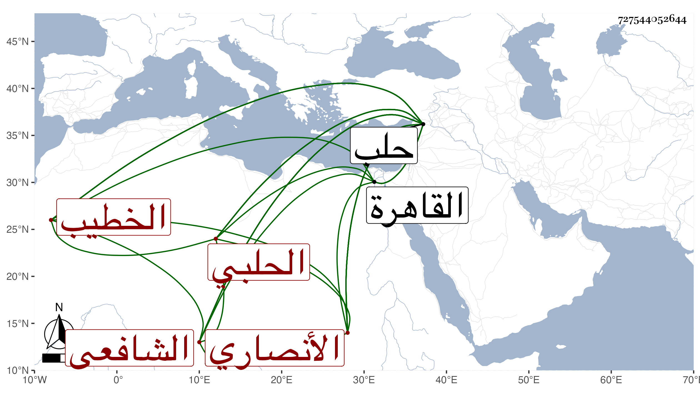

0902Sakhawi.DawLamic.ITO20230111-ara1.EIS1600.727544052644
Biography ID: 727544052644
796
موسى بن محمد بن محمد بن جمعة بن أبي بكر الشرف أبو البركات الأنصاري الحلبي الشافعي ابن أخي الشهاب أبي العباس أحمد الأنصاري الخطيب . ولد في ذي الحجة سنة ثمان وأربعين وسبعمائة ونشأ في كنف عمه فأقرأه واشتغل كثيرا وتفقه بالأذرعي وبالشمس محمد العراقي شارح الحاوي ، ثم ارتحل إلى القاهرة فأخذ بها عن الأسنوي والولوي المنفلوطي والبلقيني وغيرهم وسمع بها وبحلب وغيرهما ومن شيوخه في السماع أحمد بن مكي الأيكي زغلش والعلاء مغلطاي ، ولا زال يدأب حتى حصل طرفا جيدا من كل علم ودرس بالأسدية والعصرونية من مدارس حلب وولي قضاءها عن الظاهر برقوق فحمدت سيرته ولكنه عزل مرة بعد أخرى وكذا ولي خطابة جامعها بعد موت الولوي بن عشائر ، وشرح الغاية القصوى للبيضاوي فكتب منه قطعة ، وكان قاضيا فاضلا دينا عفيفا خيرا كثير الحياء لا يواجه أحدا بمكروه . مات في رمضان سنة ثلاث ودفن بحلب ، ذكره ابن خطيب الناصرية وهو ممن أخذ عنه ، وذكره شيخنا في إنبائه فأخر جمعة عن أبي بكر وقال إنه أدمن الاشتغال حتى مهر وأفتى ودرس وخطب بجامع حلب واشتهر ثم ولي القضاء في زمن الظاهر مرارا ثم أسر مع اللنكية فلما رجع اللنك عن البلاد الشامية أمر بإطلاق جماعة هو منهم فأطلق من أسرهم في شعبان فتوجه إلى أريحا وهو متوعك فمات بها وكان فاضلا دينا كثير الحياء قليل الشر . وهو في عقود المقريزي رحمه الله .
